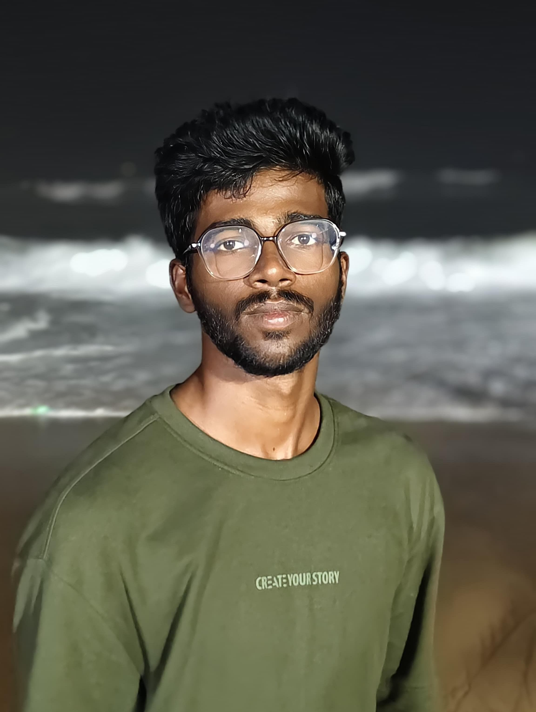

LOKESHWAR CHERUKULA
I’m a dedicated and creative web developer with a passion for building modern, responsive websites and web applications. With a strong foundation in HTML, CSS, JavaScript, and frameworks like React, I focus on creating clean, user-friendly interfaces that deliver great user experiences. I enjoy turning ideas into reality through code and continuously strive to learn new technologies to improve my skills.